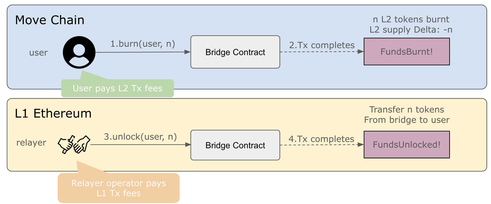
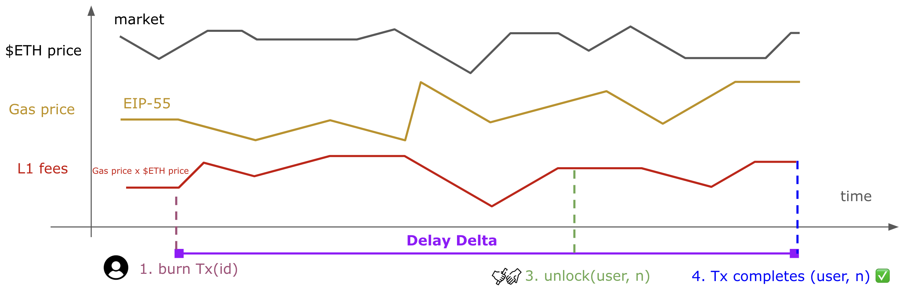

MIP-69: Bridge Fees
- Description: How to charge bridges fees when bridging $L2MOVE to $L1MOVE.
- Authors: Franck Cassez
- Desiderata: MD-69
- Approval: Stagnant
Abstract
As pointed out in MD-69, bridging \ tokens from Movement Chain to Ethereum (L1) requires the relayer to pay for Ethereum (L1) part of bridge transaction, the L1 fees. Ethereum’s transaction fees are substantially higher than Move Chain fees, and we may not sponsor the L1 fees but instead charge the user for the L1 fees. As a result the operator has to charge some transfer fees on top pf the Move Chain initiate transaction fees.
The requirements for the bridge fees from Move Chain to L1 are gathered in MD-69 and this MIP proposes some strategies to satisfy these requirements.
More specifically, this MIP covers the following topics:
- adjusting bridge fees dynamically,
- sources of uncertainty in fees,
- using oracles to collect trustworthy and recent estimates of prices,
- possible strategies to avoid/reduce deficit.
Motivation
Bridging mechanism
Bridging $L2MOVE to $L1MOVE involves the 4 following steps (Figure 1):
- User request a transfer of
n\, which initiates a burn transaction on Move Chain. D1 in MD-69. - the burn transaction executes and completes and an event
FundsBurnt!is appended to the Move Chain logs.ntokens are burnt on Move Chain. - The relayer relays the
FundsBurnt!event to the L1 by submitting a unlock transaction. - The unlock transaction executes and completes and an event
FundsUnlocked!.ntokens are transferred from the L1 Bridge to the user (on L1).

Figure 1. The 4 steps to bridge funds from Move Chain to Ethereum (L1)
Fees
The relayer pays the L1 fees (D2, MD-69) and it is hard to predict them at the time the user requests the funds transfer. Indeed the fees depend on the L1 gas price that evolves dynamically according to rules that take into account the network congestion (how full blocks are, gas-wise), which is described in EIP-1559. On top of that, the L1 fees are paid in $ETH by the relayer and the price of $ETH is also time-dependent.
Figure 2 below examplifies the changes in gas price, \ price and their effect on the L1 fees paid by the relayer.

Figure 2: L1 fees fluctuate per block according to EIP-1559
[!WARNING] To cover the L1 fees, we need to collect some fees from the user (D3, MD-69), and adjust the fees to 1) cover the costs incurred by the relayer to submit the unlock transaction (D4, MD-69), and 2) minimise the difference between what we charge the user and what we actually pay (D5, MD-69).
This MIP proposes strategies to satisfy the requirements D1-D5, MD-69.
Specification
[!NOTE] We charge the user some bridging fees to cover the cost of the (relayer) L1 fees. This section reviews some possible solutions.
As the fees are charged in $MOVE but the transaction on the L1 are paid in $ETH, we need to track the ratio . Assuming we have two pools of tokens for the Move to L1 bridge, ($MOVE) and $ETH, we pay with the tokens in and get revenues in . We should try to ensure that
to balance the funds in the two pools.
More precisely we may try to bound the difference in value in the two pools by a given constant:
Request to transfer \$L2MOVE (Move Chain)
- The user pays for the Move Chain request transaction fees,
ReqTxFeesin \, - The user MUST be able to request the transfer of
n\ provided their account balance is larger or equal ton(after taking into theReqTxFees). - The user SHOULD be charged some bridging fees and MUST be able to provide a maximum fee bound,
MaxBridgeFee, they agree to be charged. nMUST be larger thanMaxBridgeFee- The bridging fees MUST be charged in \ and deducted from the user initial amount
nduring the transfer of assets.
Completion of transfer (L1)
- The relayer MUST pay the L1 fees,
L1Fees, in \. - The user MUST get at least
n - MaxBridgeFee\. - The relayer (operator) gets
L1BridgeFees\, andL1BridgeFeesMUST be at mostMaxBridgeFee. - The L1 fees
L1Fees(in $ETH) paid by the relayer SHOULD be covered by the equivalent bridge feesL1BridgeFeesin $MOVE.
The previous requirements imply:
- We MUST track or estimate the \ price and the L1 gas price.
- We MUST track or estimate the $MOVE/$ETH ratio.
The key words “MUST”, “MUST NOT”, “REQUIRED”, “SHALL”, “SHALL NOT”, “SHOULD”, “SHOULD NOT”, “RECOMMENDED”, “NOT RECOMMENDED”, “MAY”, and “OPTIONAL” in this document are to be interpreted as described in RFC 2119 and RFC 8174.
Reference Implementation
Request to transfer \$L2MOVE (Move Chain)
The user (or a dedicated front-end) submits a transaction to request the transfer of n $L2MOVE with a maximum bridge fees expressed in $MOVE.
As a result we expect the initialize (bridge transfer) on the Move Chain to have the following signature:
/// Provides MOVE native bridge
module native_bridge {
/// User submits a transfer request
///
/// @param user The initiator on Move Chain of the transfer
/// @param recipient The recipient on L1 of the transfer
/// @param amount The amount (\\) to be transferred
/// @param max_fess The maximum amount the `user` agrees to be charged for bridging fees.
///
/// Aborts if (not exhaustive): max_fees > amount, user balance is less than `amount`.
public entry initialize(user: &signer, recipient: ethereum_address, amount: u64, max_fees: u64)
{
assert!(max_fees <= amount>);
...
// 3 in Figure 1, FundsBurnt
event::emit_event(user, recipient, actual_amount, max_fees,...);
}
...
}
To compute the bridge (and charge) fees we have three options:
- [Option 1]: compute the bridge fees at the time of the request. In that case the
actual_amounttakes into account the bridge fees. The contract on the Move Chain must keep track of the L1 gas price and the $ETH/$MOVE prices. - [Option 2]: the bridging fees are computed at the time of the
unlocktransaction, and the fees are a parameter of theunlock(Figure 1). The Relayer computes the fees and relays theactual_amount. The relayer must track the L1 gas price and the $ETH/$MOVE prices. - [Option 3]: the bridging fees are computed and charged in the L1 contract that executes the
unlock(Figure 1). The L1 contract must track the L1 gas price and the $ETH/$MOVE prices.
[!IMPORTANT] Overall, the bridging fees can be computed at different times, but we charge them in the L1
unlock(complete transfer) transaction. We also need an oracle to provide a trustworthy estimate of the \ price and L1 gas price.
[!NOTE] The resource consumption of the
unlocktransaction is fixed and depends on the size of thecalldata(fixed for unlock`). The computation of the L1 transaction fees is explained in MIP-16.
Comparisons
Quality of the estimates
The quality of the estimates for \ price ad L1 gas price depends on two main factors:
- how and where we get the estimates. We can assume that we use trusted oracles or an average on many oracles to solve this issue.
- the age of the estimates. The older the estimates the less accurate they may be.
As a result, if we use the same oracle device for the three options, the quality of the estimates solely depends on the age and:
Option 3 > Option 2 > Option 1.
Flexibility in implementation
Options 1 and 3 require the contracts to query the oracle. This is doable to query on-chain oracles as explained in this Ethereum developers section. These options are trusted provided the oracle is trusted too.
Option 2 is an off-chain solution and may provide more flexibility but probably requires that the relayer can query the estimates and is trusted.
Completion and adjustment of bridge fees
If we follow Options 1 (resp. 3), the bridging fees are adjusted either in the Move (resp. Solidity) contract that provides the initialize (resp. unlock) function.
For option 2, the Relayer keeps track of the estimates and implements the adjustment.
When do we make an adjustment?
There are several options:
- at each request (every transaction), or every $k$ transactions,
- at time intervals (to be defined).
[!IMPORTANT] In between two adjustments, the fees remain constant. We refer to the adjustment window as the intervals in which the fees are constant.
The choice may depend on the frequency of bridging requests: if bridging are rare, we may update at every request at most. If they are frequent and we cannot afford to query oracles too frequently, we may decide on a time interval.
Strategies to adjust the bridge fees
To adjust the bridge fees dynamically, we may want to ensure:
$$ | Balance(A) \times \text{$MOVE price} \times r - Balance(B) \times \text{$ETH price} | < \text{MaxDeficit} \mathpunct. $$
We need to design a strategy (in the sense of a two-player game) that guarantees the above safety property.
[!WARNING] Ideally, our solution should be better with recent estimates rather than older ones, but it may not be easy to guarantee.
The most powerful state-based strategy can be obtained by recording the values of the L1 gas price, $ETH and $MOVE prices since the genesis. It also depends on the funds in both pools $A$ and $B$. However, we cannot reasonably store all these data, and we have to base our strategy on a smaller quantity of information.
To start with we may use:
- the estimated max gas price, $ETH/$MOVE prices when the next
unlocktransaction will be processed, - the current difference between the revenues (in $MOVE) and expenses (in $ETH), i.e. the gap surplus or deficit in our pools,
- the time (seconds or blocks or transactions) we would like to cover a deficit.
As discussed during the co-location we may start with a simple strategy limited to increasing the fees by a constant factor. The decision to increase or decrease can be taken using oracles or simply based on the funds in pools $A$ and $B$.
Simple strategies
Denote $Balance(A, B)$ the difference of the balances, in USD, of pools $A$ and $B$.
$$ Balance(A, B) = Balance(A).USD - Balance(B).USD \mathpunct. $$
If $Balance(A, B) \geq 0$ we are running a surplus, otherwise a deficit.
Balance based strategy
A simple strategy is to increase/decrease the bridge fees by a $K$ ($MOVE) tokens every time we update the fees. If $Balance(A, B) == 0$, we keep the fees as they are, if $Balance(A, B) > 0$, we increase and otherwise decrease.
Assume we want to adjust the fees according to:
- the most recent value of $Balance(A, B)$,
- estimates of L1 gas price, $ETH/$MOVE prices in the next window.
If we run a deficit we want to cover it by the next time window, and if we run a surplus, we may keep the fees unchanged or decrease them.
Estimate and balance based strategies
Verification
Needs discussion.
Change Log
Appendix
A1: Notes from MIP-58
!!! warning These notes were present in MIP-58. However they do belong here instead. Please consider how to incorporate these.
- When bridging from L1 to L2, the protocol, through the Relayer, sponsors the gas cost on Movement. We do not need to make any modification on contracts or Relayer to support it.
- When bridging from L2 to L1, we have a few viable solutions but it’s preferable to highlight two.
- Relayer sets a fee on L2, a global variable that can be set at any given time. Considering that block validation time on L1 is bigger than on L2, it becomes a viable approach since L2 can rapidly adjust the fee according to the current block and always charge an above L1 gas cost fee to attempt that the bridge is net positive. \ is deducted from the amount of tokens that are currently being bridged and transferred to a funds manager. This gives the protocol a very reliable way to estimate how much MOVE will be charged and feed to the user a precise amount of tokens. However, bridge transfers cannot always immediately be initiated on the L1, e.g. if there is a surge in transactions.
- Enable the Relayer to specify on the L1
completeBridgeTransfertransaction, the bridge fee per transaction. The amount is deducted from the total amount of tokens that were bridged and transferred to a funds manager. The dangerous situation is that we expect is this takes much more than 10 minutes before the transfer can occur, and this could lead to a big disparity between the expected amount of funds and the actual amount of tokens received.
Copyright
Copyright and related rights waived via CC0.